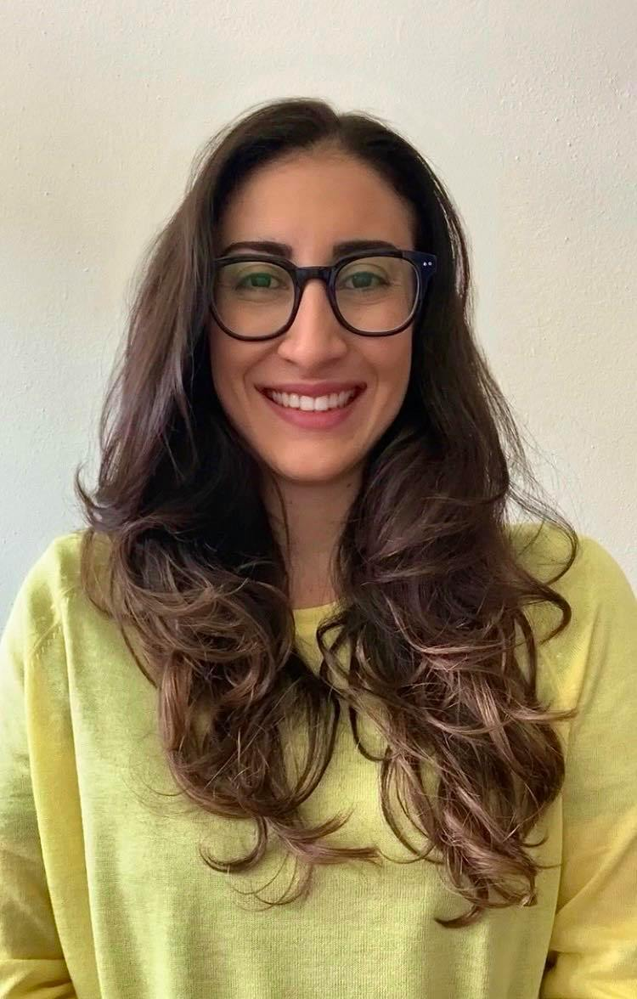
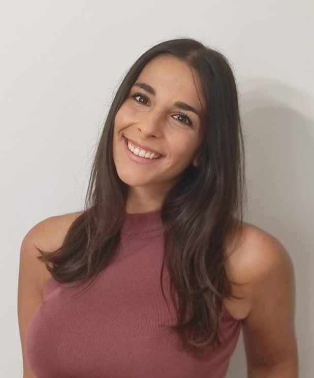

Tre ricercatrici, una cosa da dire
Che la scienza si può raccontare con parole semplici, senza per questo renderla semplicistica. Mada è nato nel 2020, accanto alle nostre carriere nella ricerca, e da allora facciamo sostanzialmente questo: prendiamo quello che sappiamo e proviamo a renderlo utile a chi la scienza deve capirla, o raccontarla.
Le ricercatrici dietro a Mada
Di giorno laboratori, dati e paper. Nel tempo che resta, Mada. Qui sotto trovi le bio, i profili LinkedIn e gli ORCID, se vuoi leggere le nostre pubblicazioni.



Carlotta M. Jarach, PhD
Laureata in Biotecnologie, in Comunicazione della Salute e in Biostatistica, e Dottoressa di Ricerca in Epidemiologia. Attualmente è post-doctoral researcher presso la New York University, dove si occupa di studi di popolazione e invecchiamento.
Ricercatrici, prima di tutto
Di mestiere facciamo ricerca, e Mada è la parte in cui proviamo a raccontarla. Tre cose che vale la pena sapere, se state pensando di lavorare con noi.
Leggiamo i paper per lavoro
Non raccontiamo la scienza da fuori: la pratichiamo, con tutta la fatica che comporta. Abbiamo tre dottorati, passiamo le giornate tra dati, laboratori e revisioni, e pubblichiamo su riviste con peer review; se siete curiosi, gli ORCID qui sopra portano dritti alle nostre pubblicazioni. In concreto, vuol dire che uno studio lo leggiamo per intero, e non ci fermiamo al comunicato stampa che lo accompagna.
Semplificare è la parte difficile
Rendere comprensibile un argomento complesso non significa togliergli i pezzi scomodi: quello è facile, e a volte è pure disonesto. La parte difficile è tenere in piedi la complessità e portarci dentro chi legge. Succede anche a noi di rileggere tre volte un paragrafo prima di capire come si racconta.
E poi ci mettiamo la faccia
Non solo testi: in questi anni ci siamo trovate in aule di scuola, ai festival, davanti a una webcam e dentro un post di Instagram. Sono mestieri diversi tra loro, perché quello che funziona su un social non funziona davanti a una quinta liceo, e li abbiamo imparati sul campo, sbagliando.
Con chi abbiamo lavorato
Università, enti di ricerca e realtà della divulgazione. Clicca su un logo per scoprire la collaborazione.


Lavori con la scienza? Parliamone
Se devi raccontare una ricerca, un dato o un prodotto a un pubblico che non è quello dei tuoi pari — un’azienda, una scuola, un ente, una casa editrice — scrivici. Ti diciamo subito se possiamo esserti utili.
Scrivici una mail